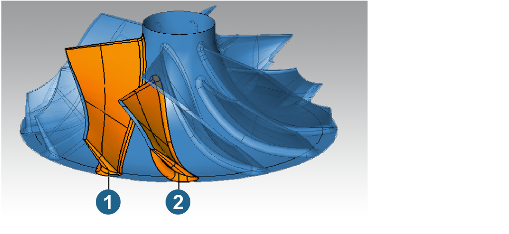
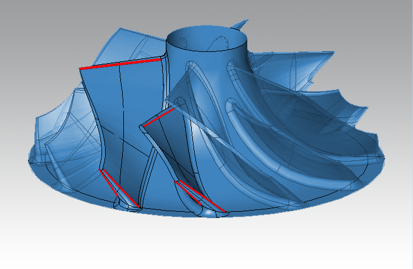

Geometry
The parts you want to machine must be available as solid or surface models. The system will support a geometry without any or with a maximum of one splitter between the main blades.
Stock refers to a part that only needs to be machined directly in the blade area. The following therefore require precise pre-machining: extended hub surfaces, shroud and trailing edges that are not rounded. A small allowance is permissible for rounded leading and trailing edges.
Note
If the part has not been pre-turned appropriately, you will need to do this using additional machining steps before commencing other work on the part. You will need the stock’s CAD data to do this.
Coordinate System
All impeller and blisk calculations in hyperMILL are based on their rotational symmetry. This means the Z axis of the coordinate system for calculations must correspond to the part’s rotational axis.
Geometry selection
You can select the surfaces to be machined directly in the geometry panel for the current job or using a hyperMILL feature to which these surfaces have been previously allocated.
As it is generally necessary to select the same geometry for all machining operations, the feature technology eases the task of choosing the geometry and quickly applying proven machining sequences to comparable parts.
For more information on defining hyperMILL features, see section Feature and macro technology.
Basic geometry
Number of main blades
This value indicates the number of main blades. This figure does not include any existing splitter blades. hyperMILL automatically generates a complete collision model with all blades based on this number.
Blade geometry
Main blade surfaces / Splitter blade surfaces
You need to select the surfaces of the main blade and, where available, the surfaces of the splitter. You must always specify the splitter blade (2) as the shorter splitter blade (to the right) located counter clockwise following the main blade (1).
You must select the following for both blades: the main flow areas, surfaces of the leading and trailing edges and optional fillets to the hub.
|  |
Warning
You should only select fillets if it is not possible to generate them directly with the used tool radius. The main flow and edge surfaces need not be trimmed against the hub. However, the distance to the hub must be less than the radius of the smallest tool used. Please note: Depending on the surface data, an additional definition of Blade skeleton curves may be required!
Blade skeleton curves
Blade skeleton curves limit the so-called skeleton surface. This is an ISO surface that sufficiently corresponds to the blade curvature. Defining curves is optional. They might be required in case of
-
suction as well as pressure side surfaces consist of a patch containing short surfaces,
-
surfaces of leading and/or trailing edges extend into the suction and/or pressure side,
-
if suction and/or pressure surface include leading and/or trailing edge area (not symmetrically),
-
if the blades get very close to horizontal at leading and/or trailing edge.
Limitations
Hub (1) and shroud (2)
Select the relevant surface. Both surfaces must form a rotational surface.
If the type of surface is different or they are made up of surface segments, you will need to generate these surfaces again. Both surfaces do not need to precisely describe the area to be machined. The surfaces should not be shorter than this area, but they can be longer.
Trim curves
These curves define the machining area around the respective edge. You will only need to define trim curves if you are going to use the Edge Milling cycle and/or blade machining with flanks.
|  |
Drive profiles
The Hub curve defines the lower blade limit and must be selected if the cutter must not touch the hub (e.g. in case of variable fillets) or if internal detection fails (calculation message might report issue with trim curves but its selection is correct).
The Shroud curve defines the upper blade limit and must be selected, if internal detection fails (reported inside calculation message).
Note
Drive profiles are only available for the 5X MB Flank Milling cycle.